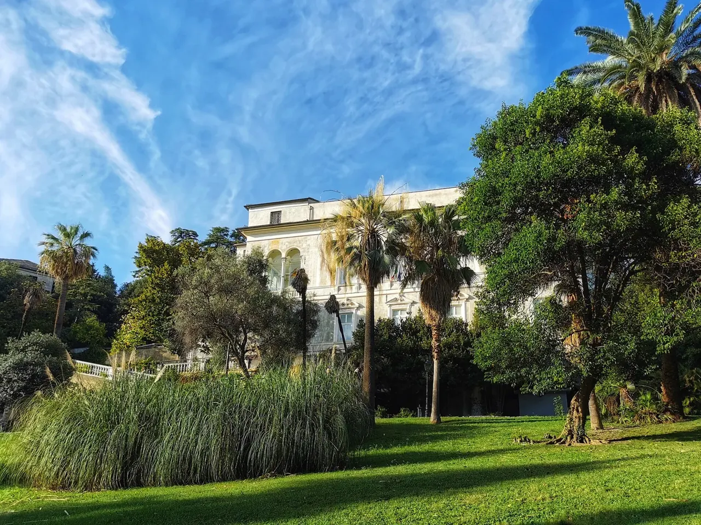

San Fruttuoso
Villa Imperiale Cattaneo

Una residenza intorno al 1500 con un parco disposto su più livelli nell’area di Terralba.
Una curiosità
Ospita la Biblioteca Lercari.
ESPLORA GENOVA
Ville, quartieri e percorsi tra la città compatta e le alture.
Marassi, San Fruttuoso e Quezzi.
Comune · Municipi e quartieri ↗
San Fruttuoso

Una residenza intorno al 1500 con un parco disposto su più livelli nell’area di Terralba.
Ospita la Biblioteca Lercari.
Questa è una prima selezione: altre strade e altri luoghi saranno aggiunti dopo la verifica delle fonti.
Scegli un altro municipio →